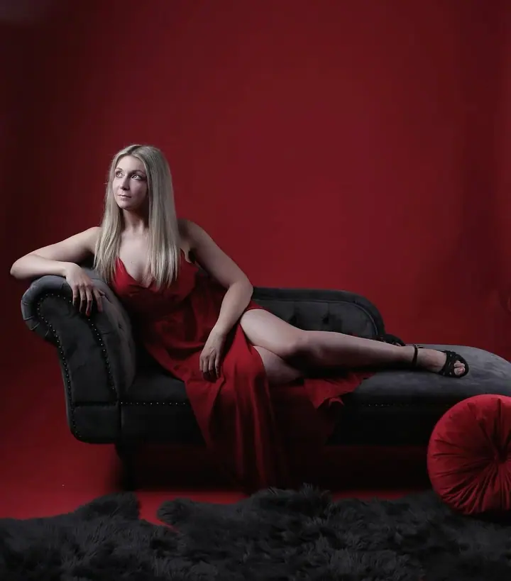
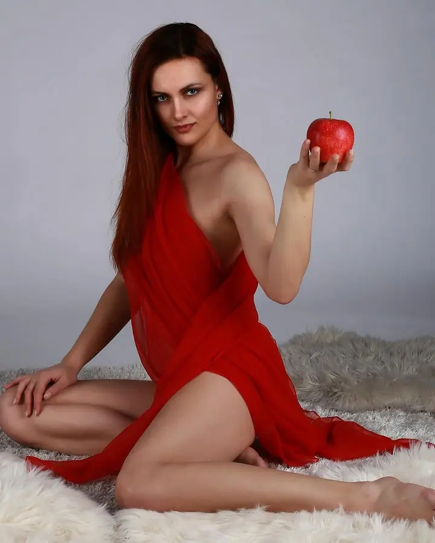

Pronájem fotoateliéru
Moderní fotoateliér plně vybavený pro profesionální i amatérské fotografy. Jednotná cena 400 Kč za hodinu včetně základního zaškolení.

Pronájem fotoateliéru a fotografické služby
Jmenujeme se GAVEX, Galerie výtvarných experimentů, a v Českých Budějovicích provozujeme zařízený fotoateliér k pronájmu na hodiny. Přijít může profesionál i začínající fotograf, protože základní zaškolení je v ceně. K ateliéru patří také fotografické služby, půjčovna techniky a výstavní galerie.
Zeptat se na termín
Moderní fotoateliér plně vybavený pro profesionální i amatérské fotografy. Jednotná cena 400 Kč za hodinu včetně základního zaškolení.
Zprostředkujeme běžné i výtvarné focení se zkušenými profesionálními fotografy přímo u nás v ateliéru. Fotí se prakticky všechny typy soukromých i společenských událostí.
Smluvní fotografové vás zaškolí v ateliérovém focení a pomohou vám přímo při práci. Cenu této služby si domluvíte individuálně přímo s nimi.
Jsme Centrum výtvarné fotografie v Českých Budějovicích. Náš fotoateliér je plně vybavený pro potřeby profesionálních i amatérských fotografů a pronajímáme ho široké veřejnosti za příznivou cenu. Najdete nás na adrese Na Zlaté stoce 567/35.
Kromě pronájmu nabízíme fotografické služby a spolupracujeme se smluvními fotografy, kteří u nás fotí, školí a asistují při ateliérovém focení. Součástí studia je i půjčovna fotografické techniky, takže nemusíte všechno vozit s sebou.
Fotografie pro nás nekončí u focení. Ve výstavní galerii, ve fotogalerii a na našem webu představujeme fotografy a jejich autorskou tvorbu. Ateliérové focení je u nás pro každého snadné, tak se přijďte přesvědčit.
Volný čas si vyberete v rezervačním kalendáři, případně nám napíšete nebo zavoláte. Ateliér je na objednávku otevřený denně od 8 do 22 hodin.
Pronájem začíná ve chvíli, kdy ateliér převezmete. Projdeme s vámi vybavení a základní zaškolení je v ceně.
Ateliér máte celý pro sebe. Pokud potřebujete techniku navíc nebo asistenci zkušeného fotografa, domluvíme ji předem.
Společně zkontrolujeme stav prostor a papírového pozadí. Zaplatit můžete v hotovosti nebo převodem na účet studia.
Jednotná cena je 400 Kč za hodinu, například 4 hodiny vyjdou na 1 600 Kč a 8 hodin na 3 200 Kč. Při opakovaném nebo dlouhodobém pronájmu se dá domluvit individuální cena.
Na objednávku každý den od pondělí do neděle, od 8:00 do 22:00. Termín si zarezervujete v kalendáři nebo přes kontakty.
Ano, pokud ho odvinete jen po úroveň podlahy a nezašpiní se ani nepoškodí. Za viditelně opotřebované pozadí na podlaze účtujeme 280 Kč za běžný metr.
Ano. Odborné školení, asistenci i samotné focení zajišťují naši smluvní fotografové a cenu si s nimi domluvíte individuálně.